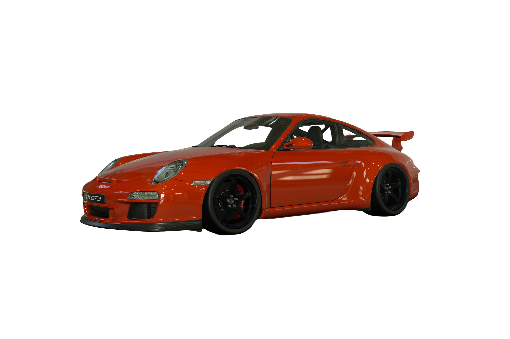

Start your engine!
Seu proximo objetivo está aqui!
Somos uma concessionaria fictícia inspira nas lojase nos preços dentro do jogo Gran Turismo 7. Entre e veja algumas simulações de como seria a venda desses carros na realidade.
Visão geral do jogo
Gran Turismo foi lançado como sendo “o verdadeiro simulador de corrida” em 1997. Com uma seleção de carros conhecidos de fabricantes da vida real e a possibilidade de dirigi-los em um mundo virtual realista, o jogo foi muito elogiado não apenas por jogadores, mas também por entusiastas de automobilismo de todo o mundo. Após 25 anos e várias iterações, o Gran Turismo retorna com uma culminação dos conceitos básicos da série. Pilotar. Colecionar. Personalizar. Vivencie o prazer por carros no mundo do Gran Turismo 7.
Se não encontrou o que busca, entraremos em contato com você.
Deixe agora o seu contato para ser notificado(a) quando chegar o seu modelo
